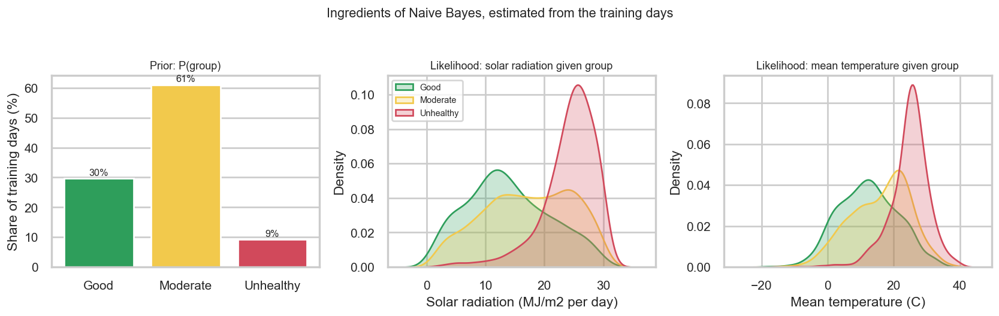
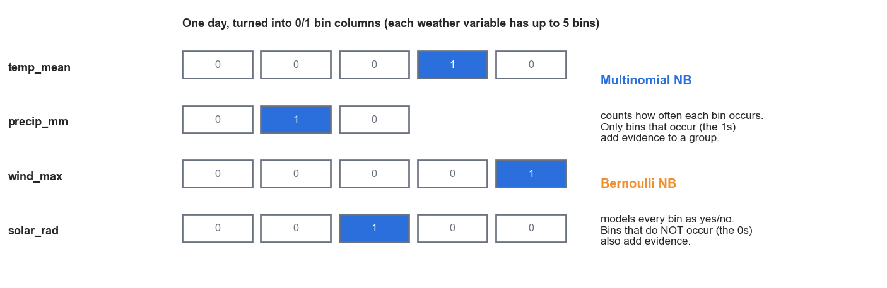
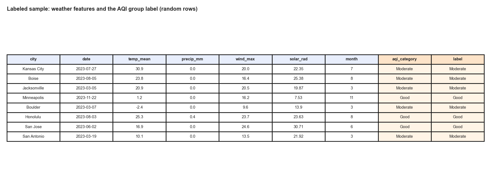
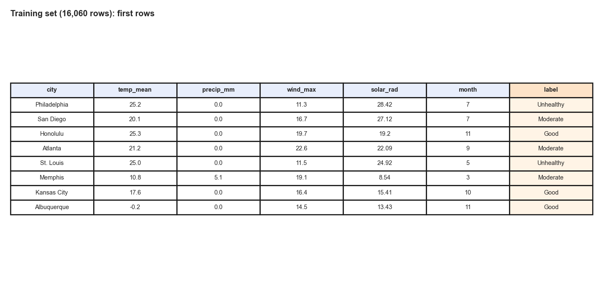
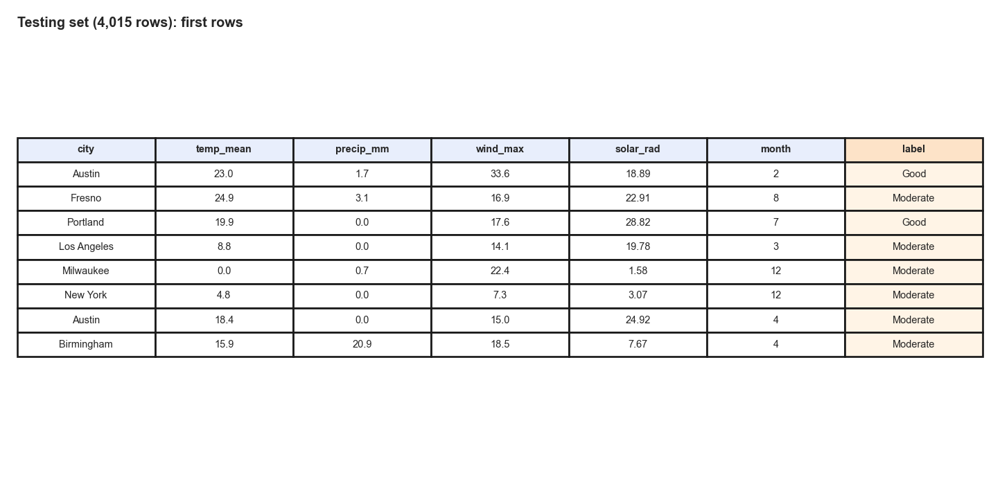
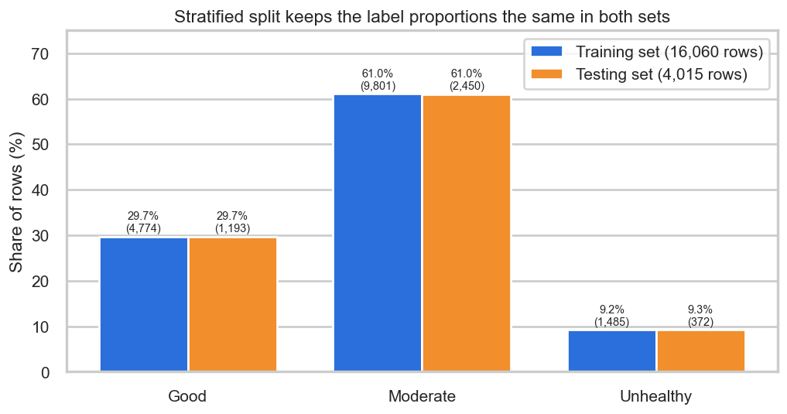
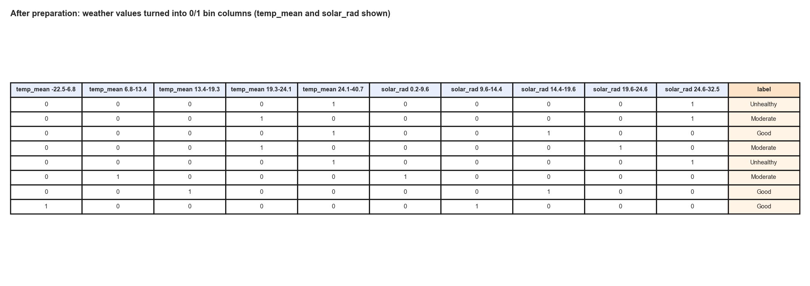
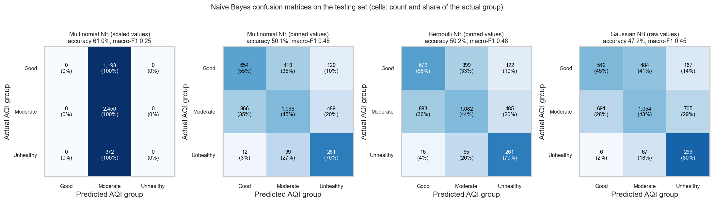
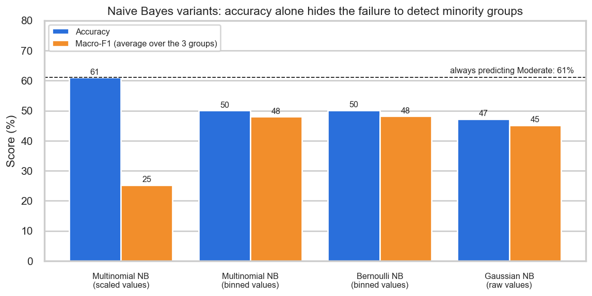
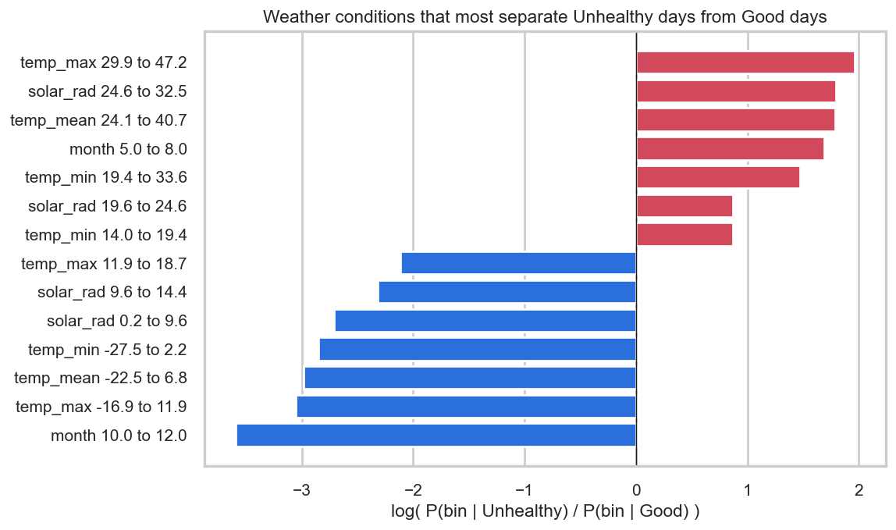

NaiveBayes
Can the air quality group of a day be guessed from the weather with simple probabilities?
This tab applies Naive Bayes to the labeled city-days to predict whether a day will be Good, Moderate or Unhealthy from that day's weather. It is organized into Overview, Data Prep, Code, Results and Conclusions.
Overview
Naive Bayes is a supervised classifier: it learns from days whose answer is already known and then assigns a group to days it has not seen. It is built on Bayes' theorem, which turns the question "how likely is this weather on an Unhealthy day?" into the question that matters, "how likely is an Unhealthy day, given this weather?". For a day with weather features x1, x2, ..., xn, the score of group c is proportional to P(c) × P(x1 | c) × P(x2 | c) × ... × P(xn | c). The first term, the prior, is how common the group is overall. The other terms are likelihoods, estimated by counting how often each weather condition occurred on days of that group in the training data. The group with the highest score is the prediction.
The method is called naive because it multiplies the likelihoods as if the features were unrelated once the group is known. That is rarely exactly true (here, mean, maximum and minimum temperature move together almost perfectly), yet Naive Bayes often classifies well because only the ranking of the groups matters, not the exact probabilities. It is very fast, works with little data and many features, and is a classic choice for spam filtering, document and sentiment classification, and medical screening. A small smoothing count (alpha = 1, called Laplace smoothing) is added to every count so that a condition never seen in a group does not force its probability to zero.

Multinomial, Bernoulli and Gaussian Naive Bayes
The versions differ in how they model the features. Multinomial Naive Bayes (the standard version used in class) treats each feature as a count or frequency of an event, as in the number of times each word appears in a document. The likelihood of feature i in group c is (count of i among days of group c + alpha) divided by (total count in group c + alpha × number of features), so every feature must be a non-negative number. Bernoulli Naive Bayes instead treats every feature as a yes/no question: the feature is present (1) or absent (0). Its likelihood is the share of days in the group on which the feature is present, and, unlike the multinomial version, it also uses absence as evidence, because a 0 contributes the probability that the feature is not present. It suits short texts and binary indicators. A third version, Gaussian Naive Bayes, models each continuous measurement within a group with a normal curve and is included here as a comparison.

What is done with it here
The Introduction asked whether an air quality group can be forecast from weather alone. Naive Bayes is used to answer this as a first, simple attempt: the probabilities of each weather condition within Good, Moderate and Unhealthy days are learned from the training set and used to classify the testing set. Four versions are compared (multinomial on scaled values, multinomial on binned values, Bernoulli and Gaussian), and results are judged with accuracy, a majority-class baseline, and the confusion matrix. Recall (the share of days of a group that were found) and precision (the share of days predicted as a group that really belonged to it) are reported for each group, and macro-F1 averages the balance of precision and recall over the three groups, so a method that ignores a rare group scores low even if its accuracy looks high.
Data Prep
A supervised method needs labeled data: every row must come with the correct answer so that the method can learn from it and be graded against it. Only rows with a known label can be used, and here every one of the 20,075 city-days has one. The label is the AQI group of the day. The cleaned table already contained the official EPA category of each day (computed from the pollutant readings in Part 1), and the four upper categories were merged into three groups because Unhealthy (293 days) and Very Unhealthy (71 days) are too rare to learn on their own and no Hazardous day occurred: Good (5,967 days, 29.7%), Moderate (12,251 days, 61.0%) and Unhealthy (1,857 days, 9.2%), the last meaning an AQI of 101 or more (unhealthy for sensitive groups or worse).
The inputs are the daily weather: mean, maximum and minimum temperature, precipitation, maximum wind speed, solar radiation, and the month of the year. No pollutant column is used, because the label is computed from pollutant readings, so including them would hand the answer to the method. The city is also left out, which keeps the question the one asked in the Introduction: can the air quality group be forecast from the weather alone? A second experiment adds each city's latitude and longitude to test how much location contributes.

Training set and testing set
The labeled rows were split at random into a training set (80%, 16,060 rows), which the method uses to learn, and a testing set (20%, 4,015 rows), which is kept aside and used only once, to measure how well the learned rules work on days it has never seen. The split was stratified, which means that each set has the same share of Good, Moderate and Unhealthy days as the whole sample, and the random seed was fixed (42) so the split can be reproduced. The two sets must be disjoint, with no row in both. If a day were in both sets, the method could simply memorize it and the test would measure memory, not the ability to predict new days, so accuracy would look better than it really is. Every row carries an identifier (row_id), and the code confirms that the two sets share 0 rows.





One caution applies to any random split of daily data: days next to each other, and days from the same city, resemble each other, so a random split can be slightly optimistic. A harder check is reported in the Results section, where the rules are learned from January to September and tested on October to December.
Preparing the numbers for Multinomial Naive Bayes
Multinomial Naive Bayes in Python (scikit-learn) accepts only numeric, non-negative input. The weather columns are numeric, but temperatures drop below zero in winter, so they cannot be used directly. Two preparations were tested. First, every column was scaled to the range 0 to 1 using the training set only. Second, every column was binned into five groups of equal size (quantile bins, learned from the training set) and each day was recorded as a set of 0/1 columns, one per bin, giving 33 columns (precipitation has only three bins, because more than half of all days are dry). The binned version is the closest match to how multinomial Naive Bayes is normally used, because each 1 marks an event that occurred. The scaled version is kept in the comparison because it shows what goes wrong without this step.

- nb_dt_labeled_dataset.csv: the full labeled sample (20,075 city-days, weather features plus the label)
- daily_city_air_weather_clean.csv: the cleaned daily table the sample comes from
- Raw data: daily weather, hourly air quality (the AQI that defines the label) and city locations
- nb_train_binned.csv and nb_test_binned.csv: the prepared training and testing sets (0/1 bin columns plus label and
row_id)
Code
The analysis is written in Python with pandas, numpy, scikit-learn (MultinomialNB, BernoulliNB, GaussianNB, KBinsDiscretizer, MinMaxScaler, train_test_split), matplotlib and seaborn.
06_naive_bayes_trees.pyon GitHub: creates the labels, splits the data, prepares the features, fits all Naive Bayes variants and draws every figure on this tab (the same script also produces the Decision Trees tab)- nb_dt_results.json: every number quoted on this tab
Results
All results are measured on the testing set (4,015 days that were never used for learning). The most important reference is a method that ignores the weather and always answers the most common group, Moderate, which is correct on 61.0% of days. Smoothing was alpha = 1 and the binned versions used five quantile bins; the class priors were learned from the training set (30% Good, 61% Moderate, 9% Unhealthy).
| Variant | Accuracy | Macro-F1 | Recall: Good | Recall: Moderate | Recall: Unhealthy | Precision: Unhealthy |
|---|---|---|---|---|---|---|
| Always predict Moderate (baseline) | 61.0% | 0.25 | 0% | 100% | 0% | - |
| Multinomial, scaled values | 61.0% | 0.25 | 0% | 100% | 0% | 0% |
| Multinomial, binned values | 50.1% | 0.48 | 55% | 45% | 70% | 30% |
| Bernoulli, binned values | 50.2% | 0.48 | 56% | 44% | 70% | 30% |
| Gaussian, raw values | 47.2% | 0.45 | 45% | 43% | 80% | 26% |

Scaled values fail in an instructive way. The multinomial version on scaled values reaches 61.0% accuracy, equal to the baseline, but its confusion matrix shows that it predicts Moderate for all 4,015 days, so it never finds a Good or Unhealthy day (macro-F1 0.25). Values between 0 and 1 are not counts, so the Moderate prior dominates every decision.
Binned values give a working classifier, but with lower accuracy. Multinomial Naive Bayes on binned values has an accuracy of 50.1%, below the baseline, but a macro-F1 of 0.48 against 0.25. It finds 70% of the Unhealthy days (261 of 372) and 55% of the Good days. The price is a large number of false alarms: only 30% of the days it labels Unhealthy really were, so about seven of every ten warnings would be wrong. Bernoulli Naive Bayes gives almost the same result (50.2% accuracy, macro-F1 0.48), which is expected because the inputs are binary, and Gaussian Naive Bayes on raw values finds the most Unhealthy days (80%) at the lowest accuracy (47.2%).

What the classifier learned

The strongest evidence for an Unhealthy day is a maximum temperature of 29.9 C or more, solar radiation of 24.6 MJ per square meter or more, and the months May to July. The strongest evidence for a Good day is the months October to December, followed by cold days (maximum temperature below 11.9 C) with little sunshine. This matches the chemistry of smog described in the Introduction.
Two robustness checks
- Adding location. With each city's latitude and longitude binned and added as inputs, multinomial Naive Bayes reaches 51.5% accuracy and macro-F1 0.49, only a small improvement (from 50.1% and 0.48). Naive Bayes cannot combine location and weather in a flexible way, because it treats them as independent.
- Learning from January to September and testing on October to December (15,015 training days, 5,060 testing days). Accuracy is 56.9% against a baseline of 47.8% for that period, which is a clearer gain over guessing, but only 14% of the Unhealthy days are found, because very few Unhealthy days occur in autumn at all. The baseline differs from the main experiment because the mix of groups changes with the season, so these accuracies should be compared with their own baselines and not with each other.
Conclusions
Weather alone is a weak forecaster of the daily air quality group. Every Naive Bayes version that actually tells the groups apart has an accuracy (47.2% to 50.2%) below the 61.0% obtained by always answering Moderate, so on accuracy alone the classifier adds nothing. What it adds is sensitivity: it finds about seven in ten Unhealthy days, which the baseline never does, at the cost of many false alarms. For a public health warning, where a missed Unhealthy day is usually worse than an unnecessary caution, that trade can be reasonable, but a warning that is wrong seven times in ten would soon be ignored.
The learned evidence agrees with the science. Heat, strong sunshine and the summer months raise the probability of an Unhealthy day, and the cool, dim days of late autumn almost guarantee good air. This answers the part of the Introduction's tenth question about which conditions are the best warning signs: high temperature and solar radiation in the warm months.
Limits. The independence assumption is clearly violated, because the three temperature columns are nearly copies of each other and are counted as separate evidence. The AQI values come from an atmospheric model on a coarse grid, one year of data was used, and neighboring days are similar, so the random split is somewhat optimistic. Unusual events such as the June 2023 smoke cannot be anticipated from local weather at all. The next method, decision trees, can combine conditions (for example heat and calm winds) and is tested on the same data and split.